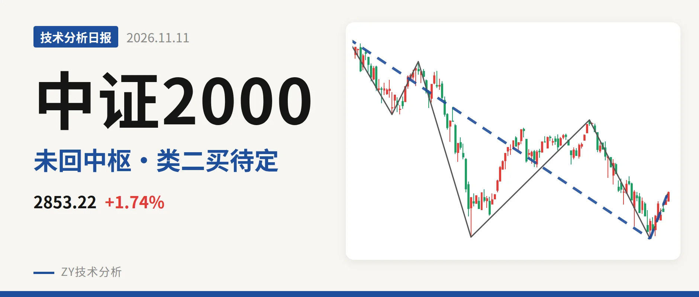
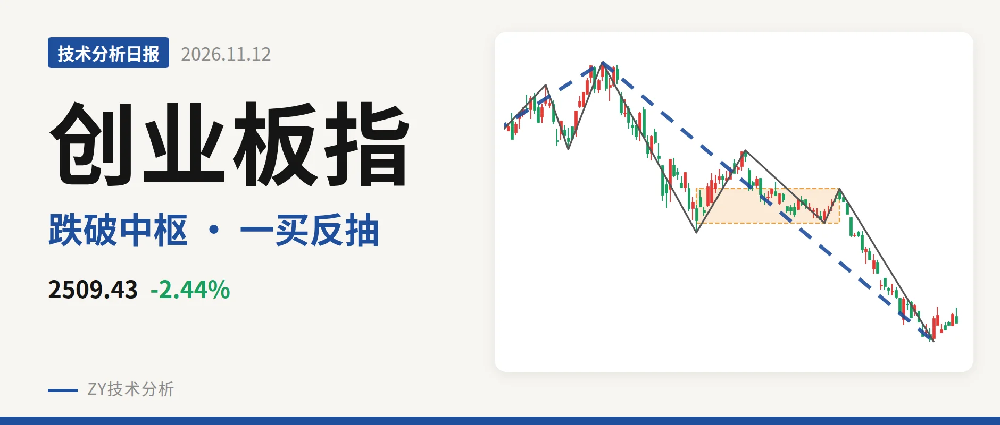

技术分析日报 · 2026-11-13

上证指数 3634.35 -0.59%
一买反弹未成笔，3634点仍弱于中枢

沪深300 4075.71 +0.41%
反抽受制4478点中枢下沿

中证500 6713.18 +1.01%
反抽未回7451点，结构仍偏弱

中证2000 2853.22 +1.74%
反弹未回3381点，类二买仍待定

中证红利 5525.10 -0.08%
冲高未及5701点，回踩5386点

创业板指 2509.43 -2.44%
跌破3227点中枢，一买反抽未成笔
⚠️ 本文为基于公开行情数据的缠论技术结构记录，由程序自动计算并生成，仅供学习交流，不构成任何投资建议。市场有风险，投资需谨慎。